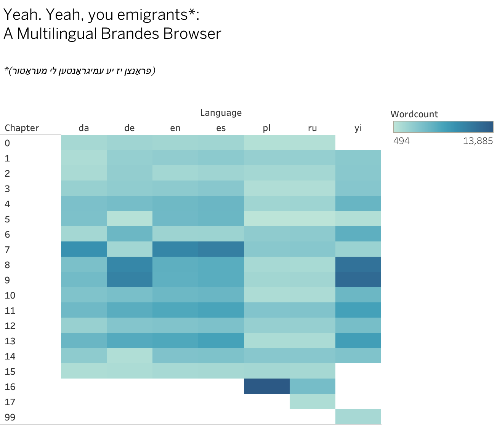

contributor:
Statiscal comparisons of Main Currents in Danish, German, English, Spanish, Polish, Russian, Yiddisch.
At a Brandes hackathon at UC Berkeley, Scandinavian Department on April 25-26 2019 Quinn Dombrowski made experiments comparing editions of Main Currents in translation (Danish, German, English, Spanish, Polish, Russian, Yiddisch). Here you can have a look at a Multiligual Brandes Browser
You can read her post about the experiment on Stanford Digital Humanities' blog here:
What do you do when you're invited to a hackathon around a text in a language you can't read? In keeping with my tendency to navigate difficulty by means of additional complications, I added more languages! ... Continue reading